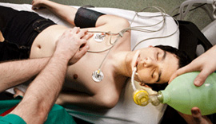
Emergency Hospital in PCMC
Moraya Multispeciality Charitable Hospital provides 24x7 emergency medical services in PCMC with trauma care, ICU support, ambulance assistance, critical care specialists, and immediate treatment facilities.
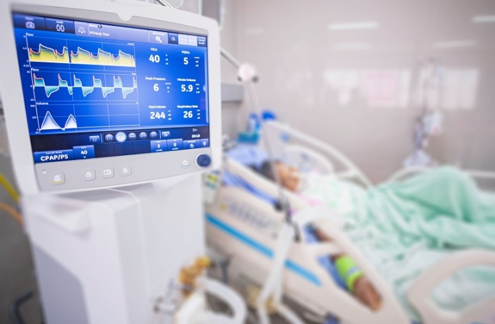
ICU Hospital in PCMC
Moraya Multispeciality Charitable Hospital offers advanced ICU facilities in PCMC with ventilator support, critical care monitoring, emergency specialists, and dedicated nursing care for critically ill patients.
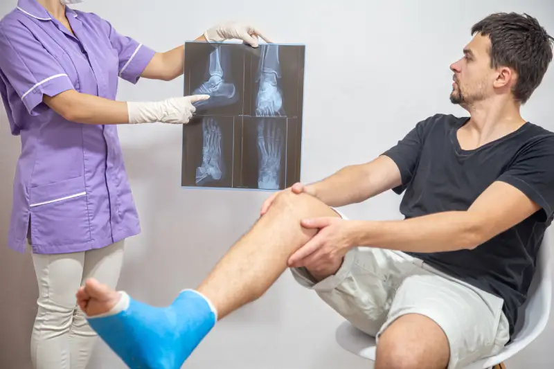
Trauma Care Hospital in Chinchwad
Moraya Multispeciality Charitable Hospital provides expert trauma care services in Chinchwad with emergency doctors, orthopaedic specialists, ICU backup, and rapid treatment for accidents and injuries.
Affordable Hospital in PCMC
Moraya Multispeciality Charitable Hospital delivers affordable healthcare services in PCMC with quality medical treatments, diagnostics, surgeries, emergency care, and experienced doctors.
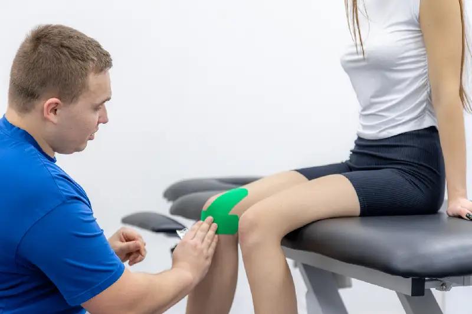
Orthopaedic Hospital in PCMC
Moraya Multispeciality Charitable Hospital is a trusted orthopaedic hospital in PCMC offering treatment for fractures, arthritis, joint pain, spine disorders, sports injuries, and orthopaedic surgeries.
Knee Replacement Hospital Pune
Moraya Multispeciality Charitable Hospital offers advanced knee replacement surgery in Pune with experienced orthopaedic surgeons, modern operation theatres, physiotherapy, and rehabilitation care.
Joint Pain Treatment PCMC
Moraya Multispeciality Charitable Hospital provides effective joint pain treatment in PCMC for arthritis, stiffness, ligament injuries, and mobility issues with expert orthopaedic consultation.
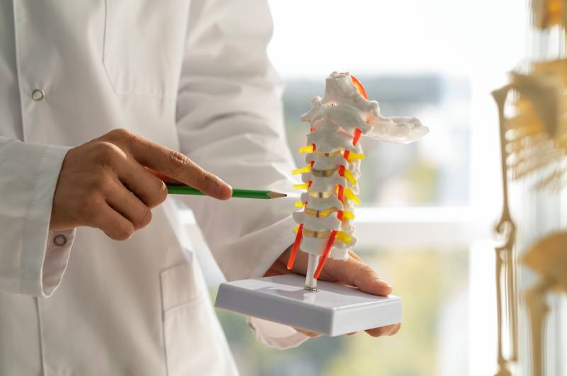
Spine Specialist in Chinchwad
Moraya Multispeciality Charitable Hospital offers expert spine treatment in Chinchwad for back pain, slipped disc, spinal injuries, nerve compression, and chronic spine disorders.
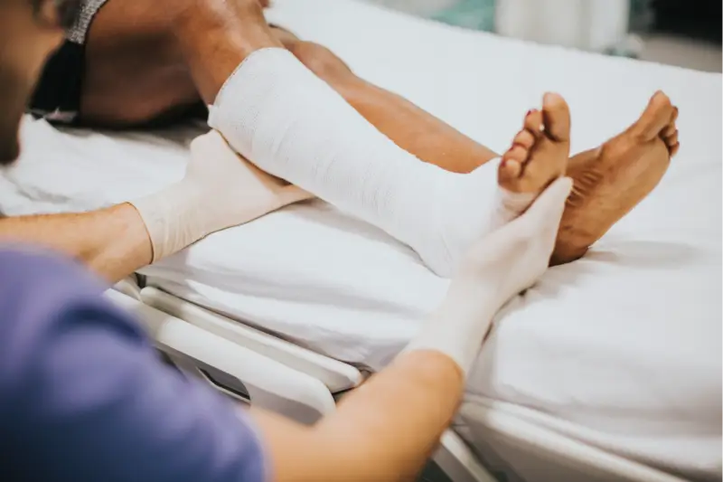
Sports Injury Treatment Pune
Moraya Multispeciality Charitable Hospital provides sports injury treatment in Pune for ligament tears, fractures, muscle injuries, rehabilitation, and physiotherapy recovery support.
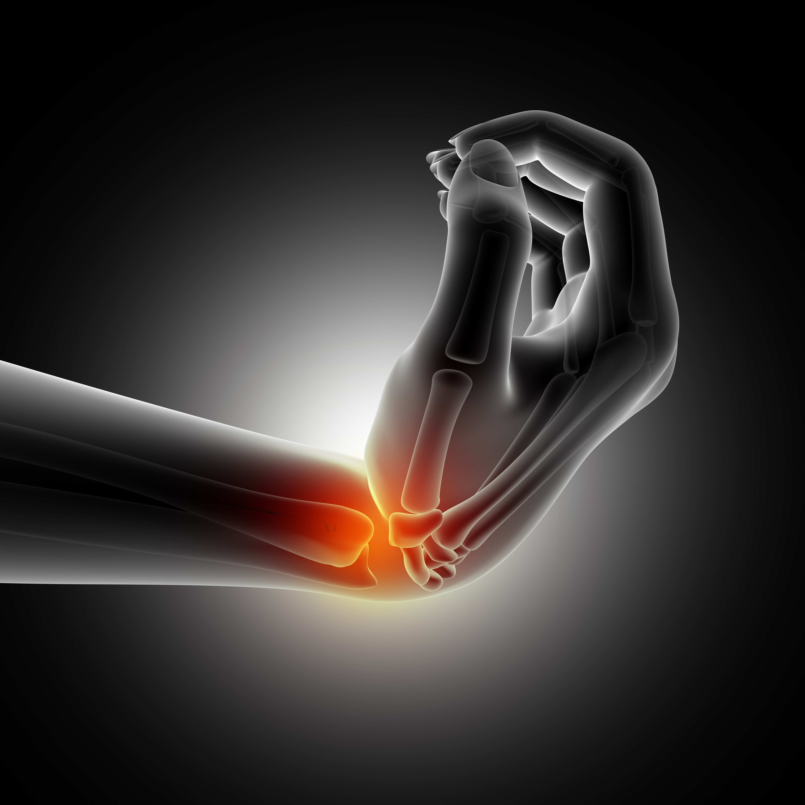
Arthritis Treatment Hospital
Moraya Multispeciality Charitable Hospital offers advanced arthritis treatment with orthopaedic specialists, pain management, physiotherapy, joint preservation therapies, and mobility improvement care.
Back Pain Treatment PCMC
Moraya Multispeciality Charitable Hospital provides expert back pain treatment in PCMC for spine disorders, muscle strain, slipped disc, nerve pain, and chronic back conditions.

Best Hearing Loss Treatment in Pune
Moraya Multispeciality Charitable Hospital offers advanced hearing loss treatment in Pune with ENT specialists, audiology testing, cochlear implant services, hearing aids, and rehabilitation support.
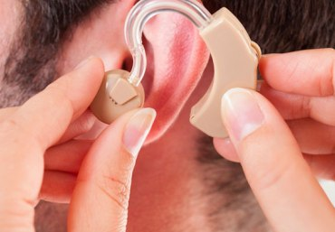
Best Cochlear Implant Surgeon in Pune
Moraya Multispeciality Charitable Hospital provides expert cochlear implant surgery in Pune with experienced ENT surgeons, advanced hearing restoration technology, and speech therapy support.

Cochlear Implant in Pune PCMC
Moraya Multispeciality Charitable Hospital offers advanced cochlear implant treatment in Pune PCMC for severe hearing loss with diagnostics, surgery, hearing rehabilitation, and ENT care.

Hearing Aids in PCMC
Moraya Multispeciality Charitable Hospital provides hearing aid solutions in PCMC with hearing tests, digital hearing devices, ENT consultation, and customised hearing support services.
ENT Specialist in PCMC
Moraya Multispeciality Charitable Hospital offers expert ENT treatment in PCMC for ear infections, sinus problems, throat disorders, hearing loss, vertigo, and advanced ear surgeries.
Physiotherapy in PCMC
Moraya Multispeciality Charitable Hospital provides physiotherapy services in PCMC for pain relief, sports injuries, post-surgery recovery, paralysis rehabilitation, and mobility improvement.
Cochlear Implant in Pune
Moraya Multispeciality Charitable Hospital offers cochlear implant surgery in Pune with advanced hearing restoration technology, ENT specialists, hearing assessment, and speech rehabilitation care.
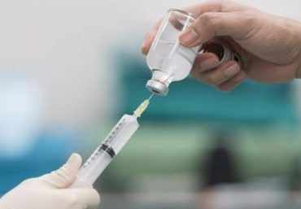
Laboratory & Blood Investigations in PCMC
Moraya Multispeciality Charitable Hospital offers laboratory and blood investigation services in PCMC with advanced pathology testing, health check-ups, and accurate diagnostic reporting.
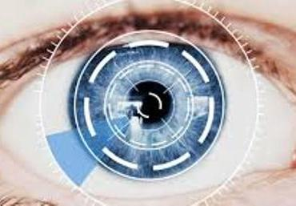
Cataract Surgery in PCMC
Moraya Multispeciality Charitable Hospital provides advanced cataract surgery in PCMC with experienced eye specialists, modern surgical techniques, and personalised vision care services.
Ear Surgery Hospital Pune
Moraya Multispeciality Charitable Hospital offers advanced ear surgery in Pune for hearing loss, eardrum repair, chronic infections, and ENT disorders with experienced surgeons.

Deafness Treatment Hospital
Moraya Multispeciality Charitable Hospital provides specialised deafness treatment with hearing assessments, cochlear implants, hearing aids, ENT consultation, and rehabilitation care.
Vision Loss Treatment in PCMC
Moraya Multispeciality Charitable Hospital offers vision loss treatment in PCMC with eye specialists, diagnostic eye testing, cataract care, and advanced ophthalmology services.
Cardiologist in Chinchwad
Moraya Multispeciality Charitable Hospital provides expert cardiology care in Chinchwad with heart specialists, ECG testing, hypertension treatment, and preventive cardiac healthcare.
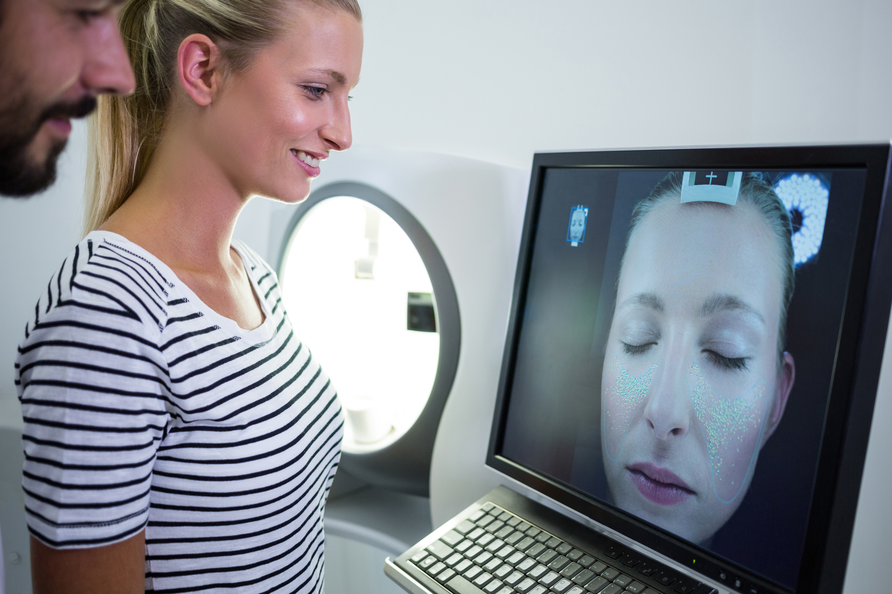
Phototherapy Treatment for Vitiligo in PCMC
Moraya Multispeciality Charitable Hospital offers phototherapy treatment for vitiligo in PCMC with advanced dermatology care, skin specialist consultation, and customised treatment plans.
Heart Specialist in PCMC
Moraya Multispeciality Charitable Hospital offers expert heart care services in PCMC with experienced cardiologists, ECG testing, blood pressure monitoring, and preventive cardiac care.
ECG Test in PCMC
Moraya Multispeciality Charitable Hospital provides accurate ECG testing in PCMC with advanced cardiac diagnostics, heart monitoring, and expert cardiology consultation services.

24/7 Pharmacy in PCMC
Moraya Multispeciality Charitable Hospital offers a 24/7 pharmacy in PCMC with emergency medicines, prescription support, healthcare products, and convenient patient services.
Chest Pain Treatment Hospital
Moraya Multispeciality Charitable Hospital provides emergency chest pain treatment with cardiologists, ECG testing, ICU support, emergency monitoring, and rapid cardiac care services.
Hypertension Treatment Pune
Moraya Multispeciality Charitable Hospital offers hypertension treatment in Pune with heart specialists, blood pressure monitoring, lifestyle guidance, and preventive cardiac healthcare.
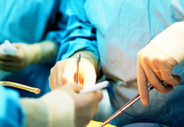
Neurosurgery Hospital in PCMC
Moraya Multispeciality Charitable Hospital is a trusted neurosurgery hospital in PCMC providing treatment for brain disorders, spinal conditions, trauma, stroke, and nerve problems.
Stroke Treatment Hospital
Moraya Multispeciality Charitable Hospital provides emergency stroke treatment with neurologists, ICU care, brain imaging, rehabilitation services, and advanced neurological support.
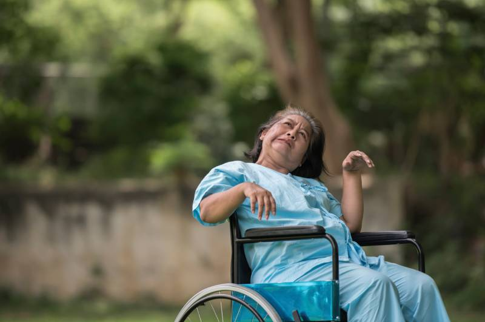
Paralysis Treatment Pune
Moraya Multispeciality Charitable Hospital offers paralysis treatment in Pune with neurologists, physiotherapy rehabilitation, nerve care, and personalised recovery programmes.
Epilepsy Treatment PCMC
Moraya Multispeciality Charitable Hospital provides epilepsy treatment in PCMC with neurologist consultation, diagnostic evaluation, medication management, and neurological care.
Child Specialist in Chinchwad
Moraya Multispeciality Charitable Hospital provides accurate ECG testing in PCMC with advanced cardiac diagnostics, heart monitoring, and expert cardiology consultation services.
Vaccination Centre in PCMC
Moraya Multispeciality Charitable Hospital provides vaccination services in PCMC for children and adults with safe immunisation programmes and expert pediatric consultation.
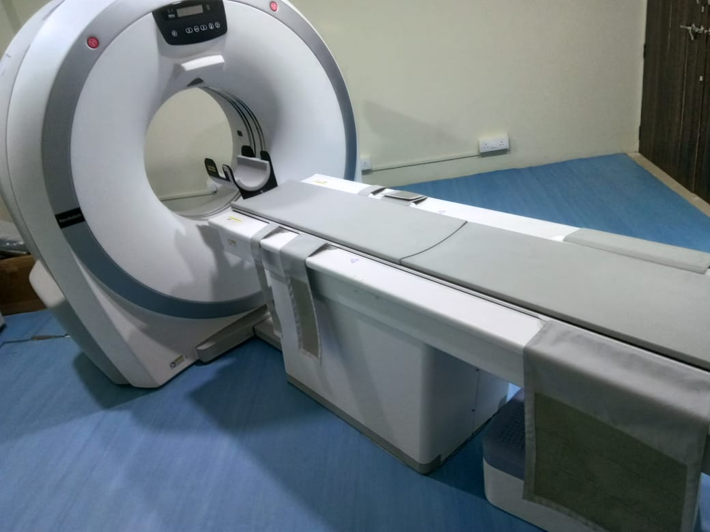
CT Scan Centre in PCMC
Moraya Multispeciality Charitable Hospital offers advanced CT scan services in PCMC with accurate diagnostic imaging, expert radiology support, and quick reporting for better treatment planning.
Core Dietitian Services in Chinchwad
Our expert dietitian provides personalized diet planning, weight management, medical nutrition therapy, pregnancy and pediatric nutrition, therapeutic diets, and lifestyle disease management